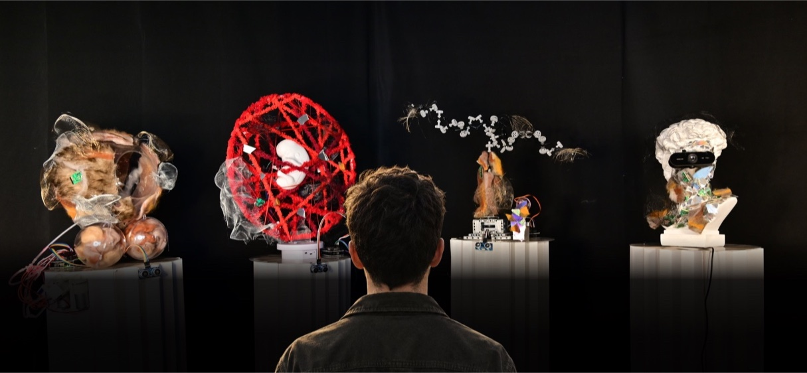
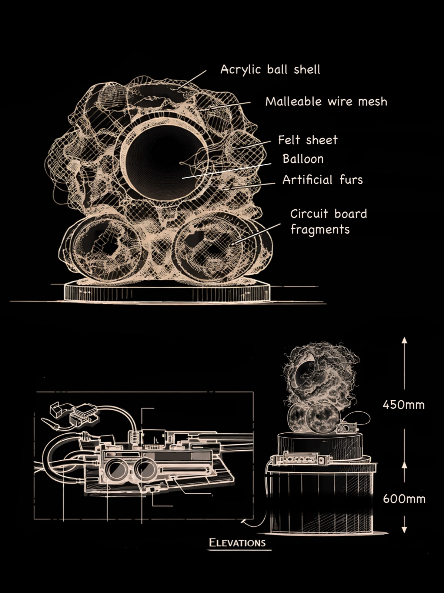
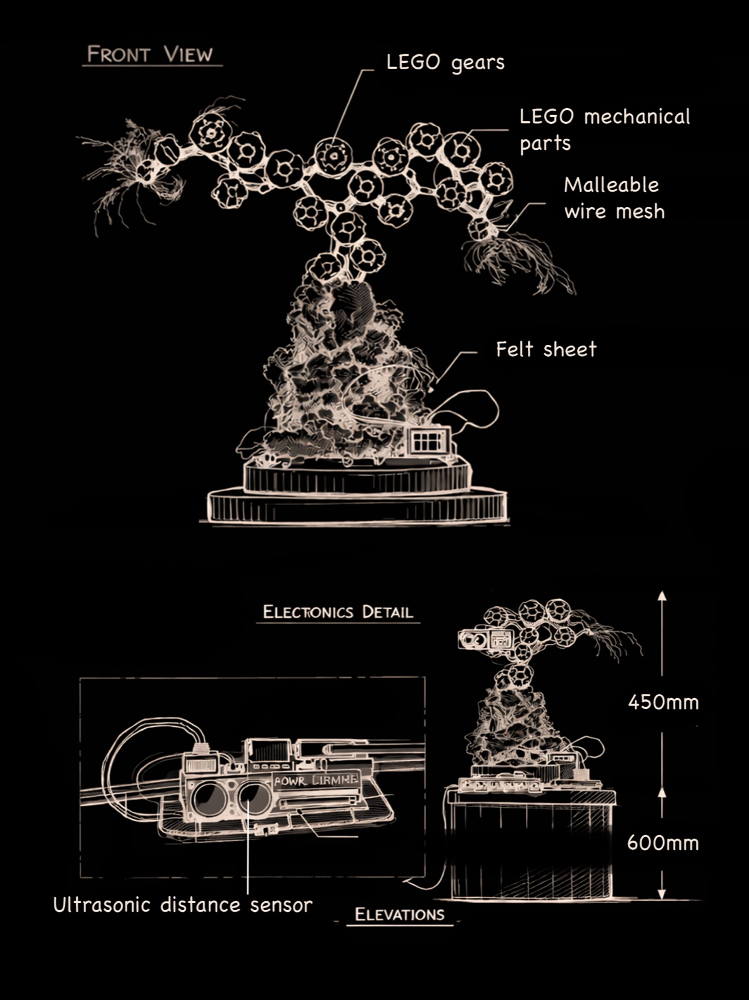
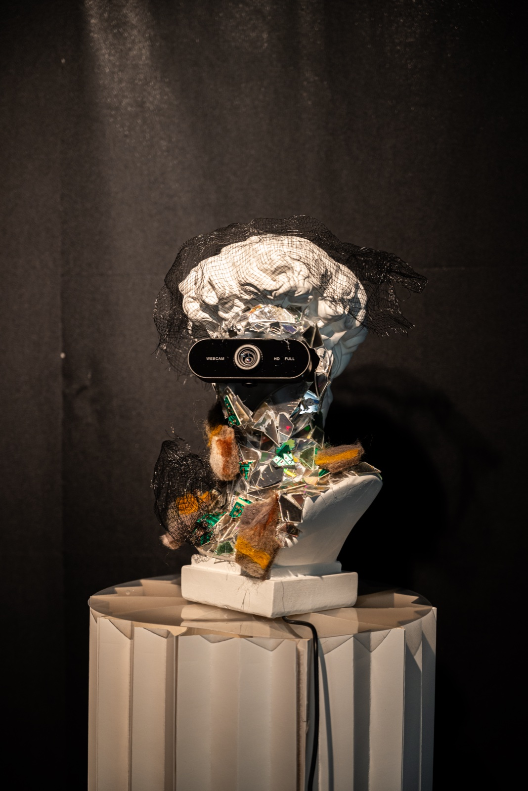

Should Humans Remain at the Center?
Humans have always stood at the center. Now we want to leave. But leaving is never free.

A museum is on fire. Save the painting, or the cat?
A debate that went viral online — people fought hard for both sides. But change one condition and everyone agrees.
Painting or cat?
Split. Culture against a life.
Painting → a child
Almost everyone saves the child.
Cat → a mosquito
No one saves the mosquito.
Every rule we live by was written from the center.
Anthropos, “human”, plus kentron, “center”: a view that takes human interests as the starting point for judging what matters. The reasons changed — myth, God, reason, industry — but the center held.
Mythic age
Nature as kin. Humans live among spirits, but already read the world for it.
Religious era
A divine mandate. Humans are made to rule over creation.
Enlightenment
Reason as the measure. Nature becomes an object to study and control.
Industrial age
Mastery through technology. Nature becomes a resource.
Posthuman turn
Ecology, animals and AI ask the human to step aside.
Rachel Carson, Silent Spring
DDT traced from crop fields into birds, rivers and human bodies. Nature is no longer a store outside us.
Peter Singer, Animal Liberation
The capacity to suffer, not species, decides who counts.
When do we forget ourselves — just for a moment?
When it looks at us
We pet the dog, then order the pork.
When it’s beautiful
We love the view, then drive home.
When we think of the kids
We worry about 2050, then turn the A/C back down.
When it’s easier
We follow the map — until it gets one turn wrong.
Anthropocentrism comes in degrees.
Before finalising the installation I asked 205 people what they would give up for animals, nature, future generations or AI. 12 situations = 4 directions × 3 levels of rising cost; level 3 puts someone else’s jobs, health or safety at stake.
| 01 · Your convenience | 02 · Your money or chances | 03 · Someone else pays | |
|---|---|---|---|
| Empathy | Keep the stray cats’ shelter · 82% | Skip the elephant ride, no refund · 80% | Keep the dog that bit a child · 9% |
| Restraint | Stop insecticide that kills bees · 76% | Keep the wetland, lose the metro · 80% | Ten-year Yangtze fishing ban · 95% |
| Responsibility | 26 °C in every building · 69% | Fuel tax, ¥100–200 a month · 81% | Close a coal region now · 9% |
| Trust | Let a phone AI run your apps · 10% | Accept an AI-only job interview · 11% | Open the city to driverless taxis · 10% |
It matters whose price you are agreeing to pay.How I restructured the three rounds
Leaving the center has a price. The installation lets you find yours.
You stand between four sculptures and face each one in every round. The subject stays familiar as the stakes change. Each spoken yes adds a band to that sculpture’s quadrant.
How the survey reshaped the rounds: 81% would pay a fuel tax — respondents knew what cleaner energy cost them. Only 9% would close a coal region — the goal still served future generations, but this time other families would lose jobs. So in each direction visitors first know what a yes costs them; in the last round they decide for someone else, without knowing how serious the harm will be.
A small cost I can feel now
I give up a little comfort or control. I know what a warmer room or a meal I did not choose will feel like.
A loss I can weigh
I give up money, time or an opportunity — a monthly bill, an extra hour of travel, one job opportunity.
A risk I accept for another
A patient, a passenger or a stranger may pay. I can see who is at risk; I cannot know if help arrives in time.
Four sculptures, four directions.
Each wraps something soft and alive-looking in wire mesh and electronic scrap, so the made, human hand always shows through.



Three rounds. Twelve questions. One ring.
Answer the installation’s questions yourself. Each yes adds a band to that sculpture’s quadrant; after each answer you see how the 205 survey respondents answered the matching situation.
How far will you move from the center?
The sculpture moves, speaks, and waits for your answer.
Your ring
When you stepped away from the center, who agreed to pay the price?
How the sculptures sense and respond.
A hand or a face triggers a response, then a recorded question. The speech-recognition module logs each spoken yes or no for the active sculpture.
Sensor
Ultrasonic distance sensor; webcam for Trust.
Controller
One Arduino board per sculpture.
Response
Air pump, gear motor, LED + rotating base, face detection.
Voice prompt
A recorded voice asks; the visitor says yes or no.
Speech input
Recognition logs the answer and adds a band.
Stand at the center
Four sculptures face you.
Reach out
Bring a hand close; for Trust, look into the camera.
It responds
Fur rises, the tree turns, the child glows.
It asks
A voice asks one question.
Answer aloud
Yes or no.
Turn 90°
Each round, the cost shifts.
Your ring
See your pattern after twelve answers.
“We all say we want to leave the human center. Yet it is where every one of us starts.”
The experience film, and a digital edition that explores the same three rounds with its own question set.
Original boards
Click a board to open it; click again to zoom and pan.